Sustitución del motor
Procedimiento de desmontaje
- Desmontar la pantalla de protección del motor. Consultar Sustitución del protector del motor .
- Desmonte la bandeja de la batería. Consultar Sustitución de la bandeja de la batería .
- Despresurice el sistema de combustible. Consultar Descarga de la presión del combustible .
- Descargue el sistema del aire acondicionado (A/C). Consultar Recuperación y recarga del agente frigorífico .
- Vacíe el líquido refrigerante del motor del sistema de refrigeración. Consultar Drenaje y llenado del sistema de refrigeración .
- Extraiga el conjunto del filtro de aire. Consultar Sustitución del conjunto del filtro de aire .
- Desconecte el módulo de control del motor (ECM). Consultar Sustitución del módulo de control del motor .
- Desconecte del servofreno, el tubo flexible de depresión del servofreno.
- Desconecte el tubo flexible/tubos de combustible del motor del tubo flexible/tubos de combustible del chasis. Consulte Reparación del acoplamiento rápido con collar metálico .
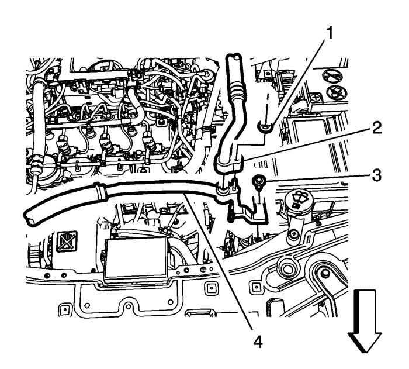
- Quite la tuerca del tubo flexible de salida del evaporador (1).
- Extraiga el tubo flexible de salida del evaporador (2).
- Quite el perno del tubo flexible del compresor de aire acondicionado (3) del soporte del módulo de control electrónico.
- Desmonte el tubo flexible del compresor de aire acondicionado (4) del soporte del módulo de control electrónico.
- Utilizando un cable de mecánico, fije el conjunto del radiador al soporte central.
- Retire la cubierta del paragolpes delantero. Consultar Sustitución del panel del parachoques delantero : Carrocería larga → Carrocería corta .
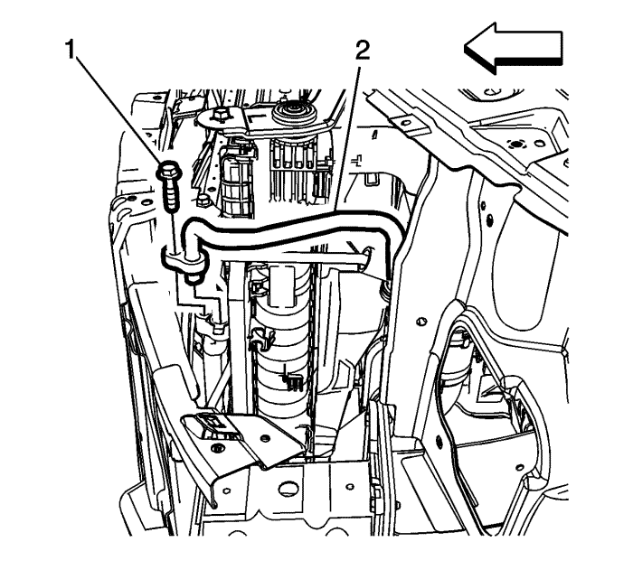
- Quite el perno del tubo flexible del compresor del aire acondicionado (1) del condensador.
- Desmonte el tubo flexible del compresor (2) del condensador.
- Desconecte el cable de selección de marchas de la palanca selectora, si el vehículo estuviese equipado con ella. Consultar Sustitución del cable de la palanca selectora .
- Desconecte el cable de la palanca del cambio manual si el vehículo estuviese equipado con ella.
- Desenchufe los conectores eléctricos del cambio, si el vehículo contase con ellos.
- Desconecte los tubos flexibles del calefactor del motor. Consultar Sustitución del tubo flexible de entrada del calefactor : Diesel → V6 → LE5 .
- Desmonte el tubo flexible de entrada del radiador. Consultar Sustitución del tubo flexible de entrada del radiador : Diesel → V6 → LE5 .
- Elevar el vehículo y soportarlo de manera segura. Consultar Elevación del vehículo con un gato .
- Desmonte el tubo flexible de salida del radiador. Consultar Sustitución del tubo flexible de salida del radiador : Diesel → V6 → LE5 .
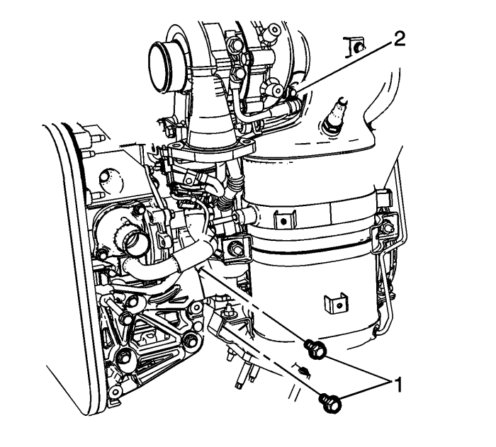
- Extraiga los tornillos de soporte del escape (1) y afloje la tuerca que sujeta la abrazadera de partículas Diesel al turbocompresor (2).
- Desmonte el filtro de partículas diesel (2) y deseche la junta (1). Consultar Sustitución del filtro de partículas del escape : LNQ .
- Monte los adaptadores de apoyo del motor en el motor. Consultar Dispositivo de soporte del motor .
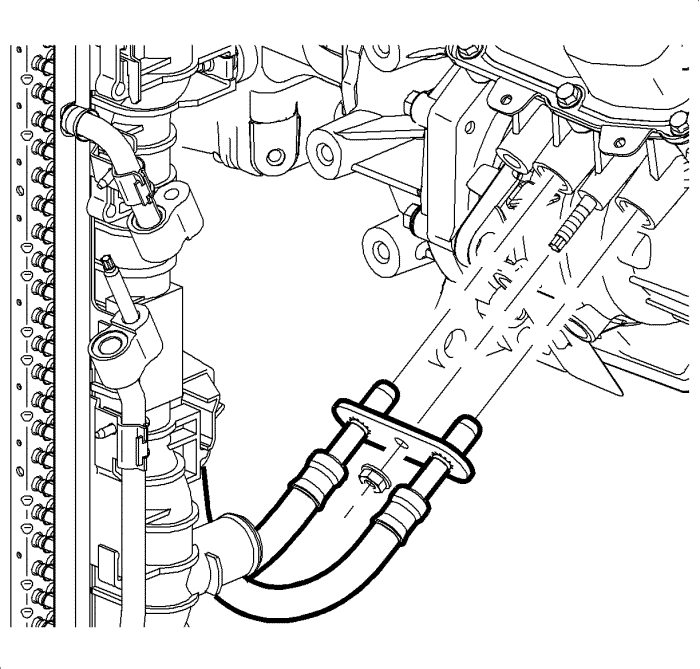
- Desconecte del transeje las tuberías del radiador de aceite del transeje y extraiga las juntas. Consultar Sustitución del tubo flexible de entrada del refrigerador de líquidos y Sustitución del tubo flexible de salida del refrigerador de líquidos .
- Tape las tuberías del radiador de aceite del transeje y conecte los acoplamientos de la tubería del radiador de aceite del transeje para evitar pérdidas del aceite del cambio.
- Retire los neumáticos delanteros. Consultar Desmontaje y montaje de la rueda y el neumático .
- Extraiga los protectores de salpicaduras derecho e izquierdo del motor. Consultar Sustitución del protector del motor contra salpicaduras .
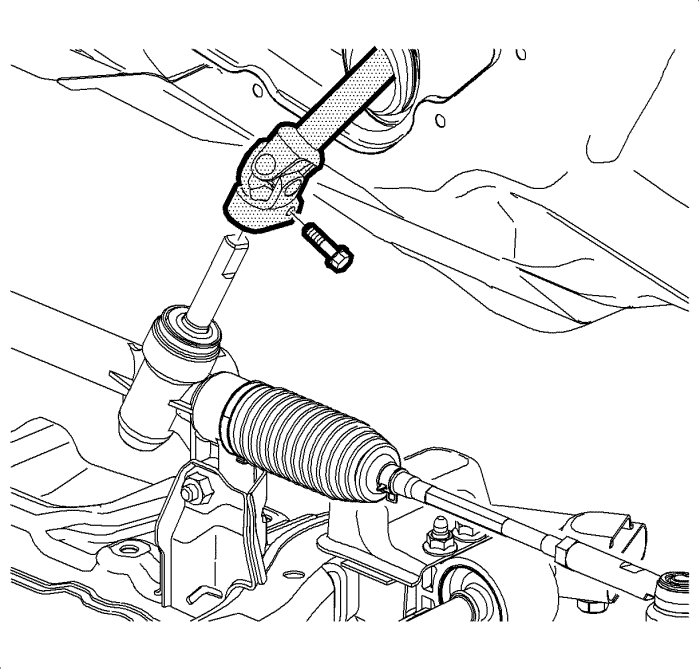
- Extraiga el perno de apriete del husillo intermedio de la dirección y deseche el perno.
- Desconecte el eje intermedio de la dirección del mecanismo de la dirección.
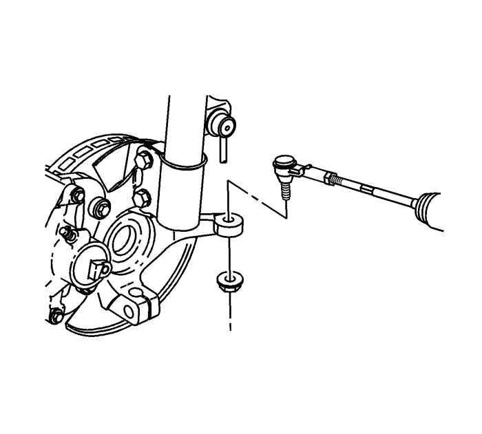
- Retire los extremos de la barra de acoplamiento exterior derecha e izquierda de las articulaciones de la dirección. Consultar Sustitución la barra de acoplamiento exterior del varillaje de la dirección .
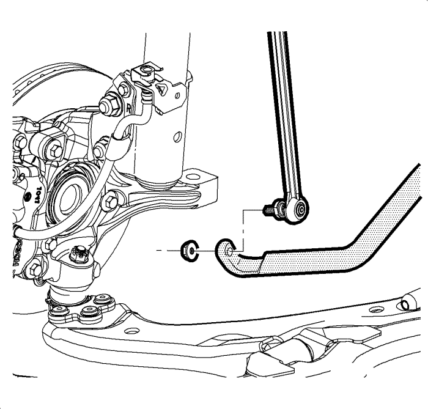
- Desmonte las articulaciones derecha e izquierda del eje de la barra estabilizadora. Consultar Sustitución de la varilla de la barra estabilizadora .
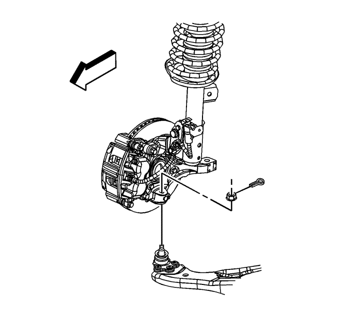
- Desmonte las rótulas inferiores derecha e izquierda de las articulaciones de la dirección. Consultar Sustitución del brazo de apoyo inferior .
- En los modelos de tracción delantera (FWD), coloque una bandeja de drenaje debajo del transeje y después separe los ejes de transmisión de las ruedas delanteras derecha e izquierda del transeje. Consultar Sustitución del semieje de la rueda delantera .
- En todos los modelos de tracción trasera (AWD), extraiga el eje de transmisión de la rueda trasera. Consultar Sustitución del árbol impulsor de la rueda trasera .
- Desmonte el motor de arranque. Consultar Sustitución del motor de arranque : LNQ → LF1 → LE5 .
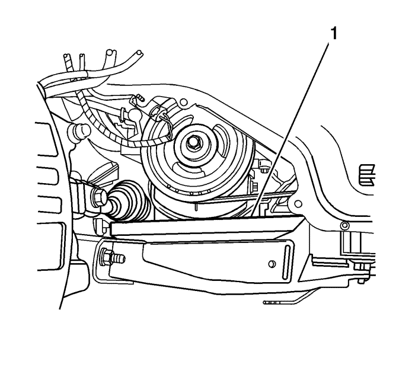
- En todos los modelos, coloque un bloque de madera (1) entre el bastidor y el cárter de aceite de motor para sujetar el motor cuando se extraigan los tornillos del alojamiento derecho del motor.
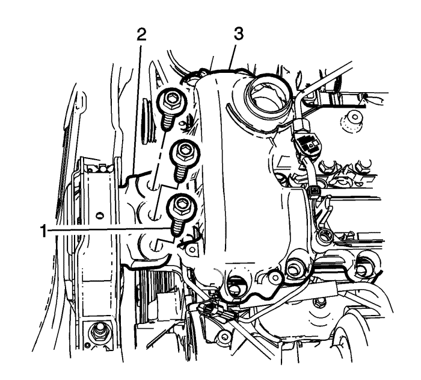
- Bajar el vehículo.
- Extraiga los pernos (2) que sujetan el alojamiento derecho del motor (1) al motor (3).
- Coloque un accesorio de apoyo del bastidor universal o un soporte regulable bajo el bastidor.
Nota: Compruebe que la carrocería del vehículo esté sujeta al elevador.
- Descienda el vehículo hasta que el bastidor contacte con el accesorio de apoyo del bastidor o el soporte regulable.
- Desconecte las grapas de fijación del mazo de cables situadas cerca los puntos de montaje derecho e izquierdo del amortiguador.
- Desmonte el bastidor de la suspensión delantera y del tren de rodaje - refuerzo Consultar Sustitución del refuerzo del bastidor de la suspensión delantera y del tren de fuerza. .
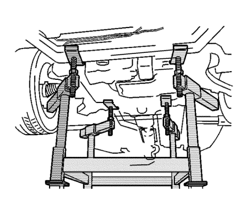
- Coloque la mesa de soporte del motor debajo del conjunto del tren motriz.
- Con la mesa colocada, elévela hasta que entre en contacto con el tren motriz.
- Extraiga los pernos del soporte.

Nota: Durante el desmontaje del tren motriz, apoye la carrocería del vehículo sobre un gato en la parte trasera del vehículo.
- Eleve lentamente el vehículo hasta que el conjunto del tren motriz esté fuera del vehículo.
- Extraiga el soporte delantero de la caja de cambios del motor. Consultar Sustitución del soporte de montaje delantero de la caja de cambios .
- Monte el sistema de elevación del motor en el conjunto del tren motriz.
- Separe el motor de la caja de cambios en el suelo.
- Eleve el conjunto del motor de la base y colóquelo en el suelo.
- Transfiera las piezas según sea necesario.
Procedimiento de montaje
- Alinee el motor con la caja de cambios.
Precaución: Consulte Precaución con las fijaciones en la sección Prólogo
- Monte la transmisión superior en los tornillos de la suspensión del motor y apriételos a 75 N·m (55 lib. pie).
- Monte el soporte delantero de la caja de cambios en el motor. Consultar Sustitución del soporte de montaje delantero de la caja de cambios .
- Coloque bloques de madera entre el motor y la base.
- Monte el conjunto del tren motriz en el vehículo.
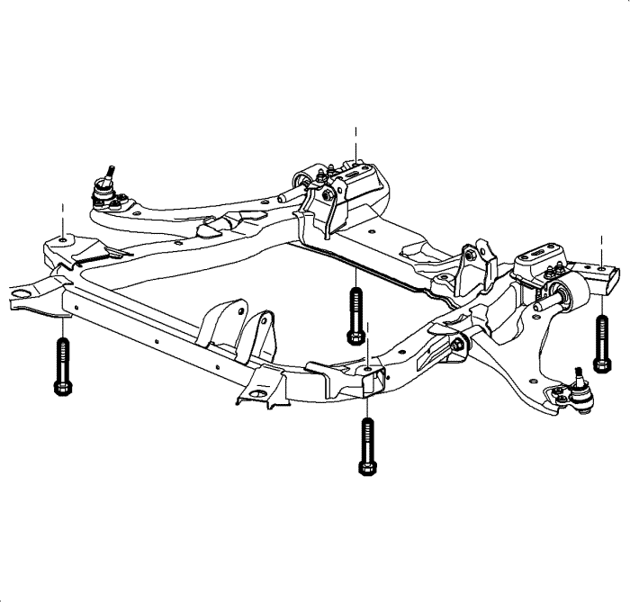
- Monte los tornillos NUEVOS del marco a la carrocería y apriételos hasta 155 N·m (114 lib. pie).
- Monte el bastidor de la suspensión delantera y del tren de rodaje - refuerzo Consultar Sustitución del refuerzo del bastidor de la suspensión delantera y del tren de fuerza. .
- Eleve y aleje el vehículo del accesorio de apoyo del bastidor o los soportes regulables y extraiga el accesorio de apoyo del bastidor o los soportes regulables de los bajos del vehículo.
- Bajar el vehículo.
- Coloque los pernos (1) que fijan el soporte derecho del motor (2) al motor (3) y apriételos a 50 N·m (37 lib. pie).
- Elevar el vehículo
- Extraiga el bloque de madera (1) entre el bastidor y el cárter de aceite de motor para sujetar el motor cuando se extraigan los tornillos del alojamiento derecho del motor.
- En todos los modelos de tracción trasera (AWD), monte el eje transmisión de la rueda trasera. Consultar Sustitución del árbol impulsor de la rueda trasera .
- En los modelos de tracción delantera (FWD), instale los ejes de transmisión de las ruedas delanteras derecha e izquierda en el transeje. Consultar Sustitución del semieje de la rueda delantera .
- En todos los modelos, monte las rótulas inferiores derecha e izquierda a las articulaciones de la dirección. Consultar Sustitución del brazo de apoyo inferior .
- Monte las articulaciones derecha e izquierda del eje a la barra estabilizadora. Consultar Sustitución de la varilla de la barra estabilizadora .
- Monte los extremos de la barra de acoplamiento derecha e izquierda a las articulaciones de la dirección. Consultar Sustitución la barra de acoplamiento exterior del varillaje de la dirección .
- Conecte el eje intermedio de la dirección al mecanismo de la dirección.
- Monte un NUEVO perno de apriete en el husillo intermedio de la dirección y apriételo a 34 N·m (25 lib. pie).
- Monte los protectores de salpicaduras derecho e izquierdo del motor. Consultar Sustitución del protector del motor contra salpicaduras .
- Monte los neumáticos delanteros. Consultar Desmontaje y montaje de la rueda y el neumático .
- Instale juntas nuevas y conecte las tuberías del radiador de aceite del transeje al transeje. Consultar Sustitución del tubo flexible de entrada del refrigerador de líquidos y Sustitución del tubo flexible de salida del refrigerador de líquidos .
- Coloque los pernos de fijación del escape (1) y afloje la tuerca (2) de la abrazadera de particulas del turbocompresor al diesel.
- Monte el filtro de partículas diesel (2) y deseche la junta (1). Consultar Sustitución del filtro de partículas del escape : LNQ .
- Monte el tubo flexible de salida del radiador. Consultar Sustitución del tubo flexible de salida del radiador : Diesel → V6 → LE5 .
- Bajar el vehículo.
- Monte el tubo flexible de entrada del radiador. Consultar Sustitución del tubo flexible de entrada del radiador : Diesel → V6 → LE5 .
- Conecte los tubos flexibles al calefactor del motor. Consultar Sustitución del tubo flexible de entrada del calefactor : Diesel → V6 → LE5 .
- Conecte al transeje el cable de control del transeje. Consultar Sustitución del cable de la palanca selectora .
- Monte el conjunto del tubo flexible del compresor de A/C al compresor. Consultar Sustitución del tubo flexible del compresor de aire acondicionado : Diesel → L4 → V6 .
- Enchufe los conectores eléctricos de la caja de cambios.
- Monte el tubo flexible del compresor de aire acondicionado (4) en el soporte del módulo de control electrónico.
- Coloque el perno del tubo flexible del compresor del aire acondicionado (3) en el soporte del módulo de control electróncio y apriételo a 20 N·m (15 lib. pie).
- Monte el tubo flexible de salida del evaporador (2).
- Monte la tuerca del tubo flexible de salida del evaporador (1) y apriételas hasta 20 N·m (15 lib. pie).
- Monte el conjunto del filtro de aire. Consultar Sustitución del conjunto del filtro de aire .
- Conecte el tubo flexible de vacío del servofreno.
- Monte la bandeja de la batería. Consultar Sustitución de la bandeja de la batería .
- Conecte el cable negativo de la batería. Consultar Desconexión y conexión del cable de batería negativo .
- Llene el motor con aceite de motor. Consultar Sustitución del aceite de motor y filtro de aceite. .
- Llene el motor de líquido refrigerante. Consultar Drenaje y llenado del sistema de refrigeración .
- Compruebe el nivel de aceite de la caja de cambios. Consultar Sustitución del aceite del cambio .
- Cargue el sistema de A/A. Consultar Recuperación y recarga del agente frigorífico .
- Cebe el sistema de combustible.
| 44.1. | Active el encendido durante 5 segundos y después el apagado durante 10 segundos. Repita el proceso dos veces. |
| 44.2. | Arranque el motor hasta que encienda. El tiempo de arranque máximo del motor de arranque es 20 segundos. |
| 44.3. | Si el motor no arranca, repita los pasos. |
- Realice el procedimiento de programación de la variación del sistema de posición del cigüeñal. Consultar Aprendizaje de la variación del sistema de posición del cigüeñal .
| © Copyright Chevrolet Europe. All rights reserved |